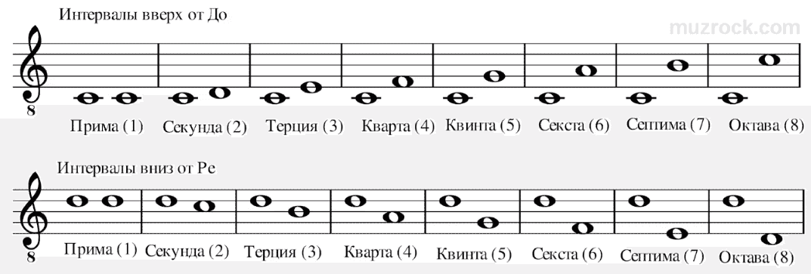
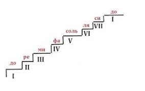

Урок 26. Ступеневая величина интервала.
Теория
Ступеневая величина интервала — это количество ступеней (нот), которые охватывает интервал, считая начальную и конечную ноты.
- Например, от До до Ми — три ступени: До (1), Ре (2), Ми (3). Такой интервал называется терция.
- От До до Фа — четыре ступени: До, Ре, Ми, Фа — это кварта.
- Ступеневая величина определяет название интервала: прима (1), секунда (2), терция (3), кварта (4), квинта (5), секста (6), септима (7), октава (8).
Чтобы определить ступеневую величину интервала, нужно посчитать все ноты между двумя звуками, включая оба конца.
Ступеневая величина не зависит от того, сколько тонов или полутонов между нотами — только от количества ступеней.
Например, от До до Соль — пять ступеней: До, Ре, Ми, Фа, Соль — это квинта.
Упражнения
- Распознавание интервала: Определите ступеневую величину интервала между двумя нотами (От До до Ми — три ступени (терция); От До до Фа — четыре ступени (кварта); От Ре до Ля — пять ступеней (квинта); От Соль до До — четвертая ступень (кварта)).
- Пение: Пропойте интервалы: секунда, терция, кварта, квинта, октава (До, Ми, Фа, Соль, До, Ре, Си, До).
Аудио-примеры
Примеры ступеневых интервалов:
Визуальные примеры
Ступеневая величина интервалов на нотном стане:

Схема подсчёта ступеней:
